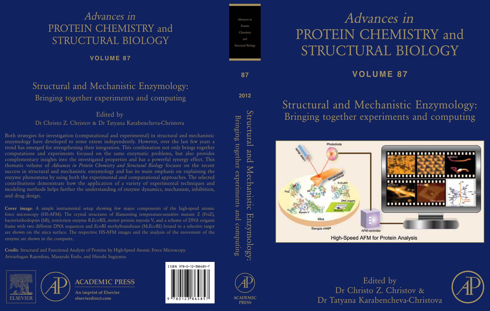

旧Webnodeのハイライトページを基に作成した一覧です。論文、表紙、プロフィールについて、確認できる場合はDOIまたは出典ページへリンクしています。
- 2023–24
- 2022
- 2018プロフィール ↗
研究者プロフィール：From mountains to oceans
Chemistry and Chemical Industry、CCI Salon、Vol. 71-9、p. 789。
- 2017DOI ↗
核酸テンプレート型酵素カスケード
ChemBioChemレビュー・ハイライト、Readers’ Choice 2019。
- 2017証明書 ↗
基調講演に対する表彰状
ICEM–SFBMS、 高雄医学大学、台湾。
- 2014DOI ↗
最先端高速原子間力顕微鏡
Chemical Reviews裏表紙ハイライト。
- 2012DOI ↗
高速AFMによるタンパク質の構造・機能解析
Advances in Protein Chemistry and Structural Biology書籍の表紙・裏表紙ハイライト。
- 2012DOI ↗
DNAオリガミを用いた一分子解析
Angewandte Chemie International Editionレビュー・ハイライト。
- 2011DOI ↗
DNAオリガミ・ジグソーピースのプログラム可能な2次元自己集合
ACS Nano表紙およびFNANO-11会議パンフレット。
- 2011受賞画像 ↗
優秀ポスター発表賞
38th International Symposium on Nucleic Acids Chemistry（ISNAC 2011）。
- 2008DOI ↗
Hot Article Award
Analytical Sciences、Vol. 24、Issue 6。